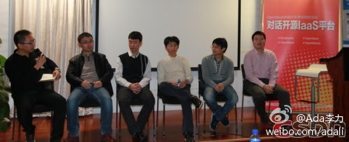
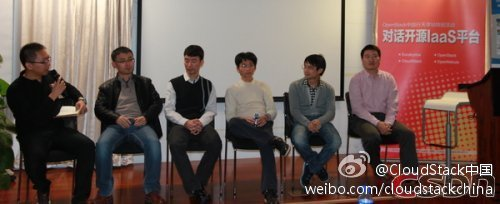

2013年OpenStack将踏实下来做好产品。CloudStack借助OpenStack的火爆曝光度陡增，但社区的核心贡献者还是以Citrix公司为主，招募更多的Committer才是重中之重，早日“孵化”成功，因此会大幅度进行推广。Eucalyptus依然会闷声发财，毕竟他的商业客户数量最多。网页链接 @CSDN云计算 
@CSDN包研 的现场报道新鲜出炉 网页链接 //@Ada李力: 视频已经上传到优酷：网页链接 各位讲师去看看？//@Ada李力: 现场手机拍的照片已上传到ITEYE上OpenStack群组：网页链接@Ada李力:#OpenStack#中国行天津站。最后也是最重要的环节panel, 贴合了活动的副标题： 对话开源IaaS平台。由CSDN云频道记者包研主持，从左至右 @CSDN包研 @Marshal-Liu @田亮-云计算 @qyjohn_ @程辉 @lee-xh
被两家联合起来对抗，你不觉得自豪吗？//@lee-xh: 感谢@Ada李力 @CSDN包研 提供这样交流的平台. 几大开源云方案能做在一起理性的分析自身的优缺点, 商业案例及未来发展是很有价值的. 希望能为广大的用户提供些参考.不过场面上感觉OpenStack联合Eucalyptus来"对抗"CloudStack啊.@CloudStack中国:这一切都发生在2012年. 2012年OpenStack成为最火爆的开源云平台，过度的宣传也放大了它的不足，成熟度更高的CloudStack恰好迎头赶上，而Eucalyptus闷声发财，一向慢吞吞的OpenNebula一连公布了4个发行版。网页链接 @mark @少年振南 @雨夜听书 
FireFox浏览器, 发力移动端，转战OS, 动作很大啊. 通常竞争的还有国内的 @猎豹浏览器 @海豚浏览器 360浏览器 国外的 @Opera浏览器 chrome，IE @CMDN炫姐姐 是不是要做个活动？@钛钰麒麟:@火狐 社区在本月20号于地铁建国门站附近国际俱乐部举办开放网络技术的移动操作系统#专题活动# - Firefox OS与平板上的OS ，携手北京GNOME用户组一起讨论开放网络技术的移动操作系统 网页链接 有时间的朋友可以去听一听@rachelzhang1@糖醋鼻子 @diamondtintin @BeijingOpenParty @Ada李力
你们在用GlassFish吗？看着这本书真亲切。[呵呵]@WildJay:在某同事位置上找到这本书//@Ada李力 在SUN工作时，参与过@家常咖啡 发起的技术书籍, 那本书销售很惨淡，其中大一部分还是我们做活动送出的。后来，美国开发团队找来想在中国做 GlassFish社区，她们是华裔，也很有热情，但效果还是差强人意。
【人怎样才能得到快乐？_李银河_新浪博客】社区运营也可以借鉴马斯洛理论，激励设置可以借鉴较高三层的满足。“所谓精神的愉悦应当包括马斯洛需求五层次中较高三层的满足：归属（社交）的需求，受人尊敬的需求，以及... --查看更多，点击进入网页链接
技术社区人物采访主要收录了三类文章来源：CSDN的社区之星采访；图灵社区的技术图书作者采访；ITEYE的开源项目团队和作者采访。 分享@Adela可爱多 的微刊《技术社区人物》 已经有11发行量 网页链接


 网页链接 有时间的朋友可以去听一听@rachelzhang1@糖醋鼻子 @diamondtintin @BeijingOpenParty @Ada李力
网页链接 有时间的朋友可以去听一听@rachelzhang1@糖醋鼻子 @diamondtintin @BeijingOpenParty @Ada李力